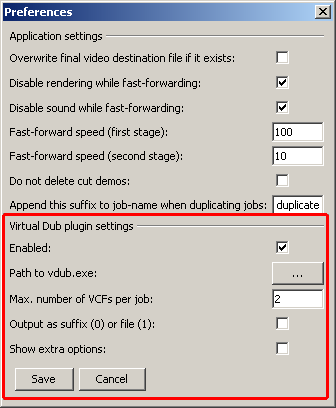
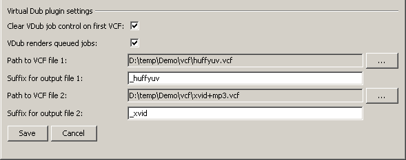

Important: Make sure that you read this documentation carefully in order to avoid mistakes!
The prerequisite for using this plug-in is that you already familiar with the “manual” process of encoding clips with VirtualDub (www.virtualdub.org). The great thing about VirtualDub is that it offers both a graphical user interface (GUI), accessible via virtualdub.exe, and a command line interface (CLI), accessible via vdub.exe.
Let's say we had a clip that we wanted to encode not only once, but twice – into different formats. Let's say that the first goal is to encode it to a loss-less Huffyuv clip, and the second goal is to encode it to a quality-based 1-pass XviD clip using MP3 sound.
What you need to do first is to open VirtualDub, set up the settings for one of the goals (by going into the video compression and audio compression dialogs) and then click on File → Save processing settings (CTRL+S). You will end up with saving a .vcf file somewhere on your hard drive … remember where you put it! After that, you'd set up the settings for your second goal and save these processing settings as well, as a new .vcf file.
First we need to set up the global settings of the plug-in. Go into the preferences dialog and enable the plug-in.

Use the “...” button to specify the path to the vdub.exe file. The setting max number of VCFs per job is important, because the number you put in there will influence how many VCF files you will be able to select in the job dialog (the dialog where you create or edit a job/template). For our example we need to set it to 2, but it doesn't matter if you choose a higher value. Since VDub will encode two files for us, we will have to tell VDub under which filenames to save them. You can select which approach you want to use by configuring the setting output as suffix(0) or file(1). If you don't check the checkbox this means that you will enter a small part of the file name, the suffix, that will be put at the end of the original file name. E.g. if your original filename was “C:\render\myVideoFile.avi”, and the suffix is “_huffyuv”, the resulting file would be “C:\render\myVideoFile_huffyuv.avi”. However, if you checked that checkbox, you would instead get a “...” button that allows you to specify the filename for the resulting file manually (this is handy if you wanted to save the file to another folder for example).
The show extra options setting will be explained at the end of this page.
Let's now have a look at the dialog when editing a job
Open the job dialog.
/P>
Let's ignore the 2 checkboxes at the top for a moment. What you will need to do is to specify the path to the 2 .vcf files you created previously in VirtualDub in step 1. Then you need to specify the suffix (or the file using the file-chooser) so that VDub knows where to save the encoded videos.
If you had your job recorded (without using the plug-in) then the status of the job will already be “done” and you can right-click the job and run the VirtualDub plug-in
If the job has not been recorded yet, just click on Start processing and wait for the result
As you know you can specify any number in the preferences dialog for the setting max number of VCFs per job. In case of our example that consists of 2 jobs, if you selected 3 (or more) as max. number, and then opened the job dialog, you would see 3 fields each for the path to VCF file and output file setting. This, however, is not a problem. The plug-in will only execute those VCF jobs for which both the path to the VCF and the output file fields are filled with proper information.
You still don't know what the 2 checkboxes in the job dialog at the top of the VDub settings mean. What you need to know is that VirtualDub is having its own “job queue”, which, however, is called “job control”.
The following scenarios can make sense:
Having both checkboxes enabled: Each time a new NDR job is executed which has VirtualDub jobs, the job control of VirtualDub will be cleared. This means that if you had other, old things in there (possibly when working with VirtualDub outside of the NDR) that these will be deleted from VirtualDub's job control, before the new jobs are added there. Checking the second checkbox means that after adding one of the VirtualDub jobs from within the the NDR, VirtualDub will actually encode them right away (which you will want, at least under normal circumstances).
Having both checkboxes disabled: In this case the only thing the NDR would do would be to add the two jobs to the job control of VirtualDub, but VirtualDub won't be encoding them. They are just put into the queue. This means that if you were to start the the graphical user interface of VirtualDub after the NDR completed processing, and open the Job Control (F4), you'd see these jobs “waiting”, and you could render them by pressing the Start button in Virtual Dub.
The reason why these checkboxes exist is flexibility. I often want the NDR to record stuff over night, because during the recording process my PC is virtually unusable. However, encoding clips in VirtualDub is a task that, depending on the codec, can be done in the background and allows me to use the PC for other things. In this case I'd disable both checkboxes, have the NDR record all clips and add them to VirtualDub's job control, and then on the next day, I decide when and which jobs to encode into different formats from within the VirtualDub GUI.
And btw, just to be clear, the second checkbox means that, when enabled, VirtualDub would actually start encoding all clips that have already been in VirtualDub's job control and that have not been encoded yet.
If you selected the show extra options checkbox in the preferences dialog, you will notice that, in the job dialog, you got 2 additional settings/checkboxes for each VCF file. Their names are pretty much self-explanatory. I added these checkboxes because, after a scene was rendered, I usually have the clip encoded into a loss-less format (e.g. Huffyuv) right away. Since it is no problem to encode further things (e.g. compressed XviD movies) based on the Huffyuv clip (instead of always using the original avi file), enabling both these checkboxes for VCF 1 would mean that the 2nd (3rd, 4th …) VCF jobs will be based on the huffyuv-encoded file, and I got rid of original, big video as well, saving hard disk space.
In case you suspect that the expected, encoded file(s) is somehow incorrect (or even missing), have a look at the logs directory in the NDR folder. You will see log-files with the following format:
VirtualDub_NameOfTheJob_vcf1.log
Instead of “vcf1” you might also find “vcf2”, “vcf3”... it specifies for which VCF file of that job the log file stands for.